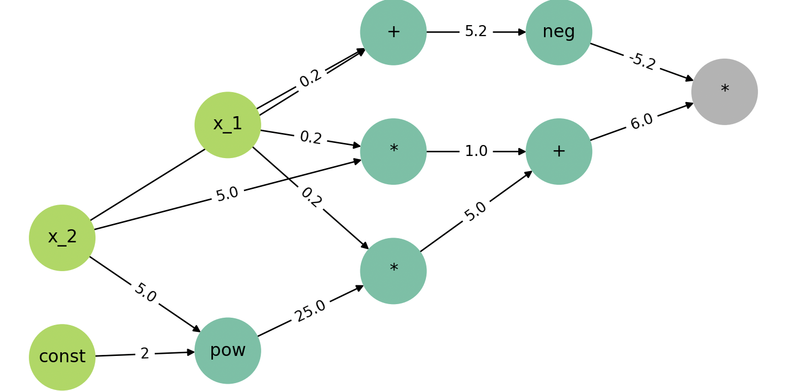
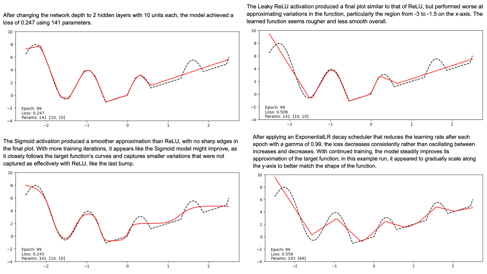
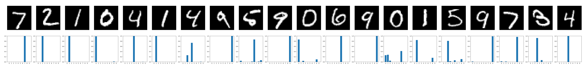
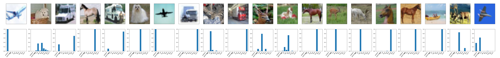
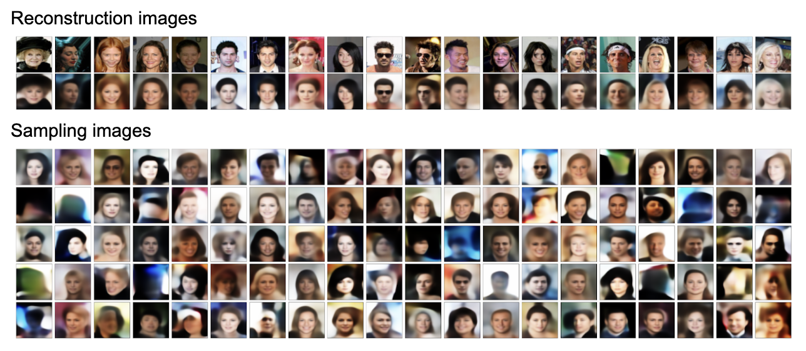

CS 435 - Applied Deep Learning
Python / PyTorch / Weights & Biases
Here are all my projects from CS 435 - Applied Deep Learning with Stefan Lee. The course covered both the mathematical foundations and implementation details behind several widely used deep learning methods, drawing directly from research papers. Projects ranged from building a scalar autograd framework to training a transformer-based language model.
Check out the GitHub repository here!
Learned core autograd techniques by building a small framework that can dynamically construct a computational graph and performs backpropagation over it. This involved defining both forward and backward passes at each node, propagating gradients through the graph, and implementing gradient descent for optimization. I also learned how to write unit tests for backpropagation to verify gradient correctness.

Implemented and trained a fully-connected neural network in PyTorch to model 1D functions. This involved defining a custom dataset and a feed-forward network class, implementing the training loop, and experimenting with network depth, activation functions, learning rate schedules, and hyperparameter tuning.

Built and trained a basic CNN using the MNIST dataset with data augmentation and accuracy evaluation. I learned to track experiments with Weights & Biases to make comparisons across different runs.

Implemented and trained a ConvNeXt model in PyTorch, including a custom LayerNorm variant that normalizes across channel dimensions for B x C x H x W tensors. Built core components such as the patchifying stem (to convert the image into a grid of patches), residual blocks with layer scaling and stochastic depth, hierarchical downsampling, and the final classification head for predicting class logits.

Built an encoder-decoder architecture with sequential stages combining residual convolutional blocks and spatial downsampling. Implemented reusable components (residual blocks, downscaling, bottleneck layers), assembled the encoder, and developed the corresponding decoder and full forward pass. Trained and evaluated the model on the CelebA dataset.
